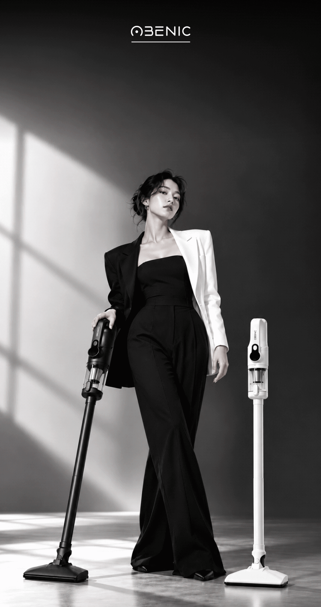
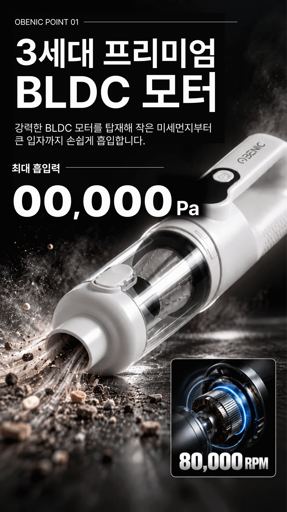
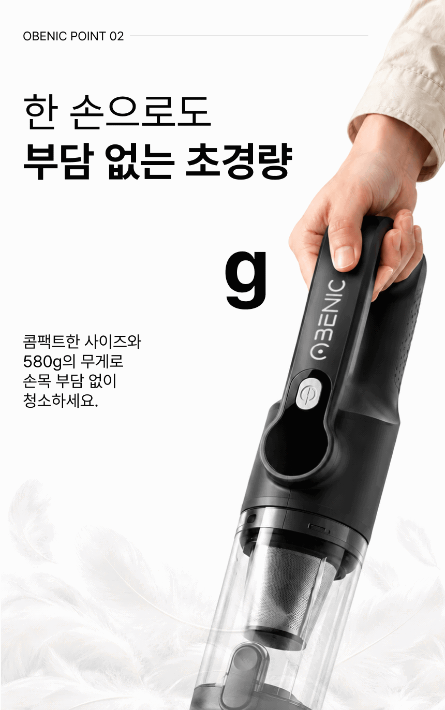
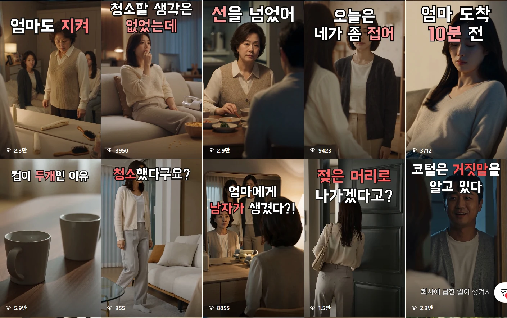
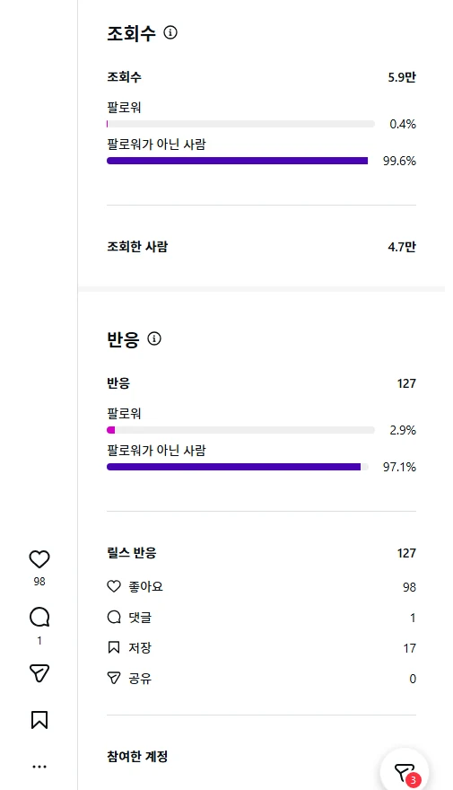

Selected work01—04
제품을 설명하는 페이지에서
다음 장면이 궁금해지는 콘텐츠까지.
스펙에서 시작해,
하나의 판매 페이지로.
오베닉 코털제거기 OB-NT100 · 제품 정보만 주어진 상황에서 필요한 자료를 직접 만들고, 상세페이지를 완성했습니다.
당시 30일 결제 건수
필요한 컷부터 직접 정의했습니다.
촬영 자료와 별도 지원 없이 시작해, 촬영 콘셉트와 컷 리스트를 기획했습니다. 사내 스튜디오에서 약 300장을 직접 촬영하고 사용할 장면을 선별했습니다.
이미지와 카피를 함께 설계했습니다.
제품 보정, 카피라이팅, 정보 구조, 최종 디자인까지 전 과정을 단독 수행했습니다. 각 기능이 구매자의 질문에 답하도록 순서를 구성했습니다.
결제 건수는 기존 포트폴리오에 기록된 집계 당시 수치입니다. 페이지 제작만의 매출 기여도를 의미하지 않습니다.
제품의 인상을 바꾸는
비주얼과 타이포그래피.
오베닉 주력 청소기 리디자인 · 흑백 대비, 과감한 제품 확대, 큰 숫자와 기능별 장면으로 상세페이지의 시각적 흐름을 새롭게 구성했습니다.






흑백으로 만드는 집중
화이트와 블랙 제품을 하나의 비주얼 언어로 묶고, 명암과 제품 크기로 시선의 우선순위를 정했습니다.
필요한 장면을 직접 제작
제품 촬영 소스에 AI 비주얼 제작과 후편집을 더해, 사용 장면부터 기능 디테일까지 표현 범위를 넓혔습니다.
기능이 읽히는 화면
핵심 숫자와 짧은 카피를 크게 배치하고, 기능별 정보를 모듈로 나눠 스크롤의 리듬을 만들었습니다.
리디자인 전체 작업 보기 · 16개 섹션 GIF 7개 포함 · 클릭해서 확대
챙길 땐 작게,
말릴 땐 강하게.
여행용 드라이기 AI 광고 · 기능을 나열하던 기획을 여행의 시작부터 도착까지 이어지는 짧은 이야기로 재구성했습니다.
기능의 순서를 이야기로 바꿨습니다.
패킹 → 접이식 손잡이 → 380g의 휴대성 → 도착 후 사용. 전달할 기능에 우선순위를 두고, 여행 상황 안에서 자연스럽게 읽히는 흐름을 설계했습니다.
장면의 생성부터 편집까지.
인물과 제품 장면을 AI 이미지·영상으로 만들고, 네거티브 필과 비정형 앵글로 광고의 분위기를 잡았습니다. Premiere Pro의 컷 편집과 자막으로 짧은 영상의 리듬을 완성했습니다.
가족의 이야기로 시작하는
브랜드 숏폼 드라마.
오베닉 인스타그램 릴스 · 가족 사이의 오해와 반전을 웹드라마 형식으로 풀어낸 AI 콘텐츠 시리즈입니다.
제품 설명에 앞서,
다음 장면이 궁금하도록.
익숙한 가족 관계에 작은 의심과 반전을 더했습니다. AI로 인물과 장면을 제작하고, 일상 속 제품을 이야기 안에 연결해 브랜드 콘텐츠를 시리즈로 확장했습니다.
대표작 「컵이 두 개인 이유」는 두 개의 컵이라는 일상적인 단서로 궁금증을 만듭니다. 인사이트상 조회의 99.6%가 비팔로워에게서 발생하며, 기존 팔로워 밖으로도 이야기가 전달됐습니다.
제공된 Instagram 인사이트 캡처 기준. 수치는 캡처 시점의 표시값이며, 실시간 조회수가 아닙니다.


대표 콘텐츠 인사이트 확인하기
「컵이 두 개인 이유」
조회수 5.9만 · 조회한 사람 4.7만 · 반응 127
비팔로워 조회 비중 99.6%
조회수와 조회한 사람은 서로 다른 지표입니다. 비팔로워 비중은 조회 기준이며, 매출·전환 성과를 뜻하지 않습니다.


기획에서 완성까지,
끊기지 않는 제작.
웹디자인에서 시작해 촬영, 카피, AI 이미지와 영상으로 작업의 범위를 넓혔습니다. 필요한 콘텐츠를 먼저 정의하고, 주어진 자료의 한계를 넘어서 실제 결과물로 완성합니다.
커머스 기획 · 상세페이지
제품의 강점과 구매자의 질문을 연결하고, 카피와 정보 구조를 함께 설계합니다.
촬영 · AI 비주얼 제작
제품 촬영과 보정, AI 이미지 생성과 후편집으로 필요한 장면을 만듭니다.
GIF · 텍스트 모션그래픽
숫자 롤링과 타이포 애니메이션으로 핵심 정보를 강조하고, 상세페이지용 GIF로 구현합니다.
AI 영상 · 브랜드 스토리텔링
제품 광고와 가족드라마형 숏폼의 기획, 장면 생성, 편집까지 연결합니다.
제품 이해
기능과 고객의 질문 파악
흐름 설계
카피·구성·씬의 우선순위
비주얼 제작
촬영·AI 생성·이미지 보정
움직임 설계
GIF 텍스트 모션·AI 영상
최종 완성
디자인·편집·매체 적용